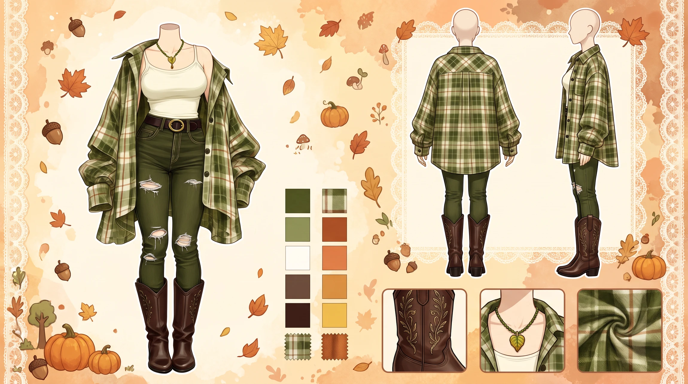
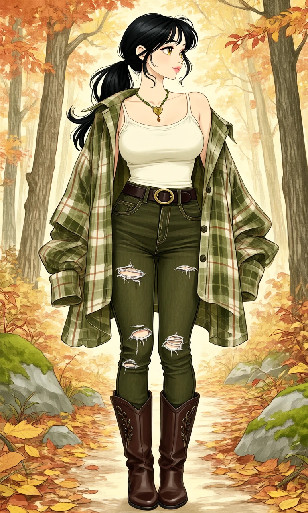
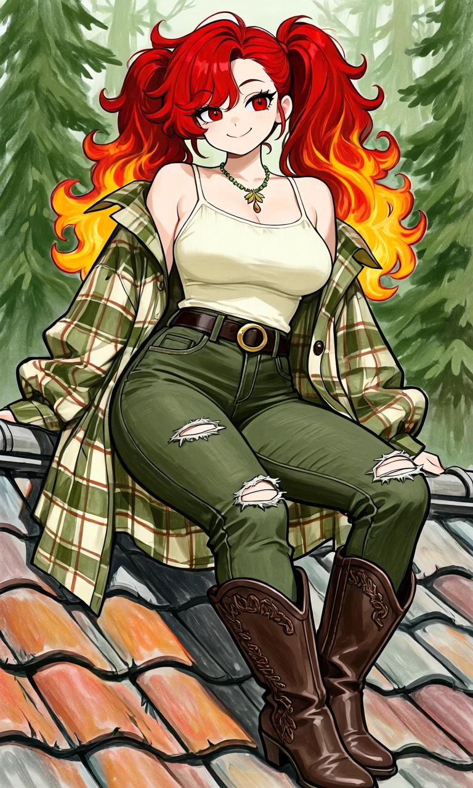

Plaid & Proud

Outfit Prompt
Wearing a fitted cream-colored camisole tank top with thin spaghetti straps, a softly rounded scoop neckline, smooth cotton fabric, and a simple minimalist design. The camisole is tucked neatly into high-waisted jeans.
An oversized olive-green and cream plaid flannel button-up shirt worn open and loosely draped off both shoulders. The flannel features a large forest-green, muted olive, cream, and dark brown tartan plaid pattern, with thin warm rust-colored accent lines. Relaxed oversized silhouette, dropped shoulders, long voluminous sleeves gathered at the wrists, buttoned cuffs, pointed shirt collar, dark buttons down the front, and a curved hem hanging below the hips. The flannel has a soft, slightly thick brushed cotton texture, creating a cozy layered appearance.
High-waisted dark olive-green skinny jeans, fitted closely around the hips, thighs, knees, and calves, with subtle denim texture. Multiple distressed horizontal rips across both legs, including small tears on the upper thighs, larger frayed openings around the knees, and additional distressed patches above the knees. Visible frayed threads and natural worn denim edges. Classic five-pocket construction, front zipper, and belt loops.
A dark chocolate-brown leather belt threaded through the jeans, featuring a large rounded antique-gold oval buckle at the center.
Dark brown leather mid-calf western cowboy boots, featuring softly pointed rounded toes, low stacked heels, decorative western-style embroidered stitching along the shafts, and slightly curved boot openings. The skinny jeans are tucked neatly inside the boots.
A delicate antique-gold necklace with small forest-green beads, a decorative golden leaf pendant, and a tiny dangling amber-brown gemstone.
Outfit Examples



